日志查看工具:log-player
郭大可 2022-8
功能简介
任务背景
目前在排查问题时，由于多线程下业务繁多，从而在定位问题时，很难跟进上下文。尽管业务已有traceId,但是串联起来还是比较耗时。因而需要约定日志打印方式，以及实现相应的日志查看工具。
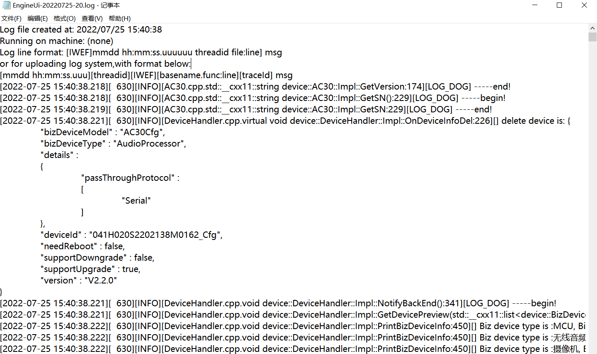界面布局
- 初始化页
- 主页面 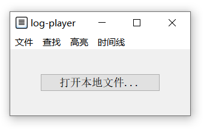 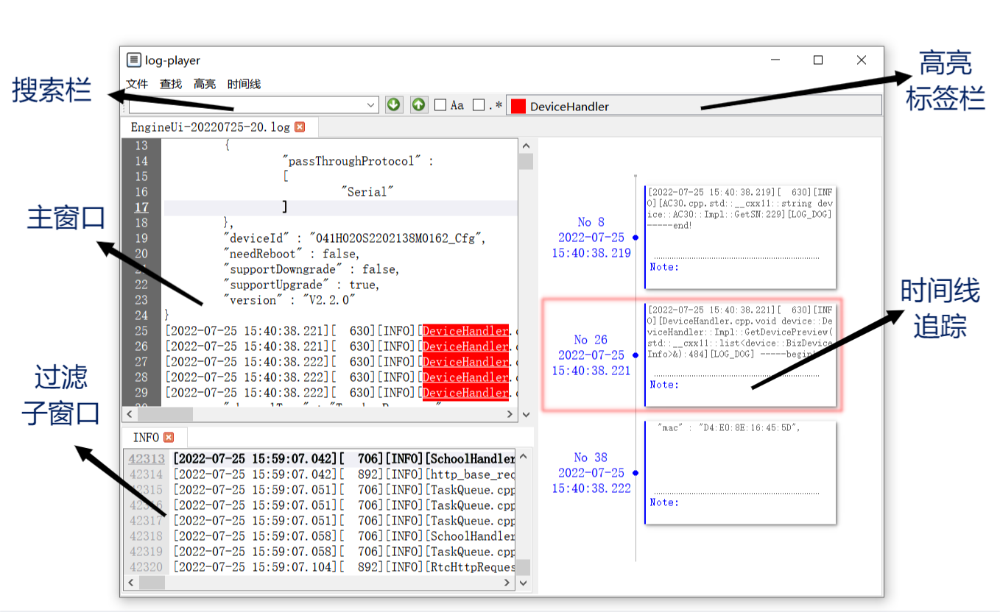
未打开文件时，显示初始化页
日志查看
- 文本展示
- 打开大文件: 百Mb级
- 行号显示
- 多标签显示
- 打开多个文件
- 跳转到指定行
- 菜单栏/快捷键
- 最近打开
- 高亮当前行 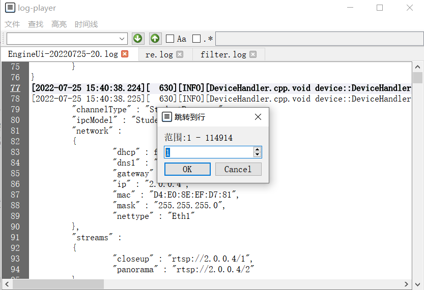
查询与高亮
-
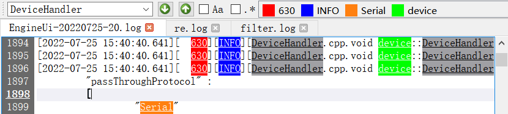
-
右键快捷查询/高亮
-
高亮关键词
- 集中显示高亮列表: 方便管理高亮词及色彩
- 自定义高亮色彩: 多词同色
-
查询关键词
- 大小写模糊
- 正则表达式匹配
日志过滤
-
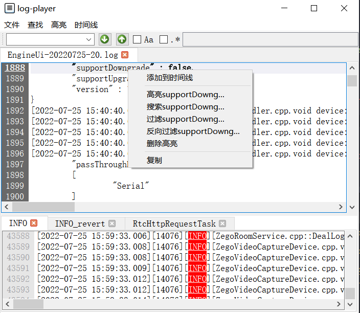
- 右键快捷过滤
- 大小写模糊/正则表达式
- 正向/反向过滤
- 子窗口显示
- 子窗口搜索/高亮
- 支持嵌套过滤(右键)
eg: \[[0-9]{4}-[0-1][0-9]-[0-3][0-9]
时间线分析
-
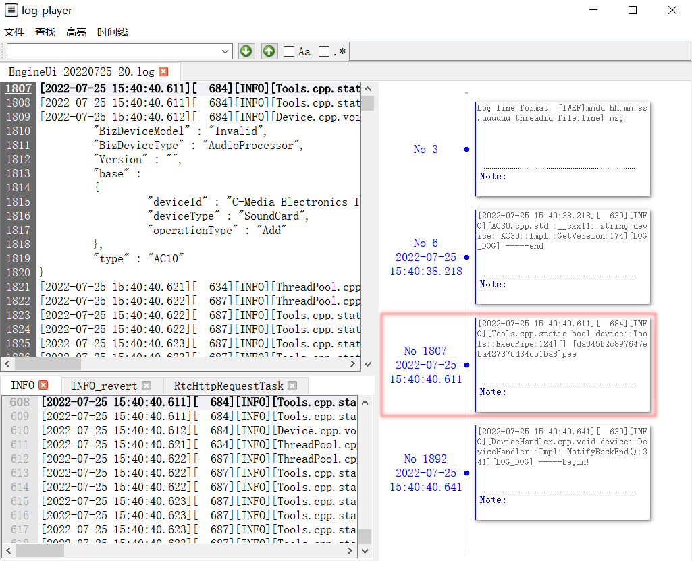
- 以行号为ID,时间为副ID,整行为内容
- 更改时间/内容匹配模板
- 子窗口添加时间点
eg: \[[0-9]{4}-[0-1][0-9]-[0-3][0-9]
- 通过时间线定位特定行
- 主/子窗口协同显示
- 方向键快捷切换
- 导出当前时间线
时间线分析拓展
- 基于单时间线分析,实现多时间线追踪功能
- 更广泛的适用性: 多线程日志分析
- 保留了单时间线的高亮动画,删除定位行功能
- 与过滤功能共同使用,事半功倍
| 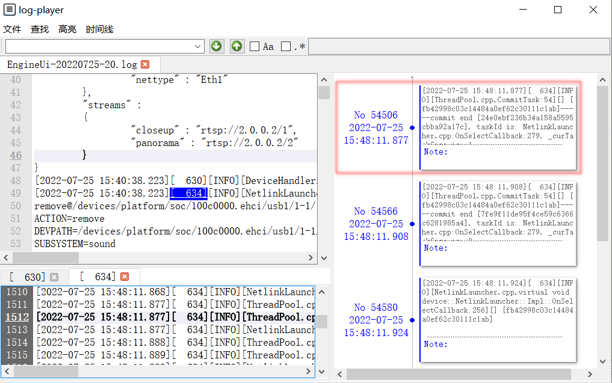 | 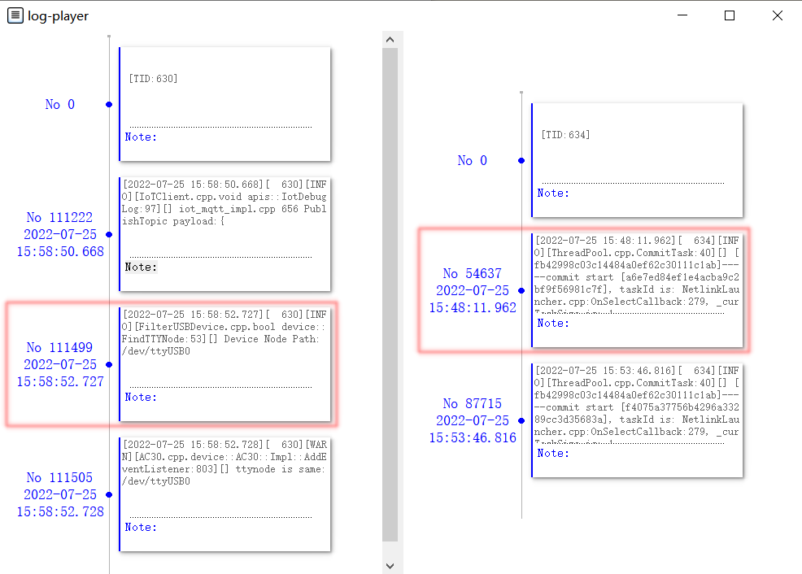 |
番外功能
- 文件分割
- 指定行范围分割
- 保存并新建标签页打开
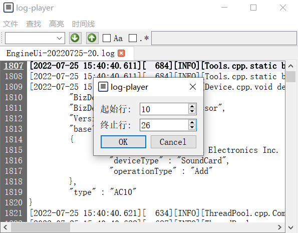 
番外功能(cont'd)
- 过滤结果导出 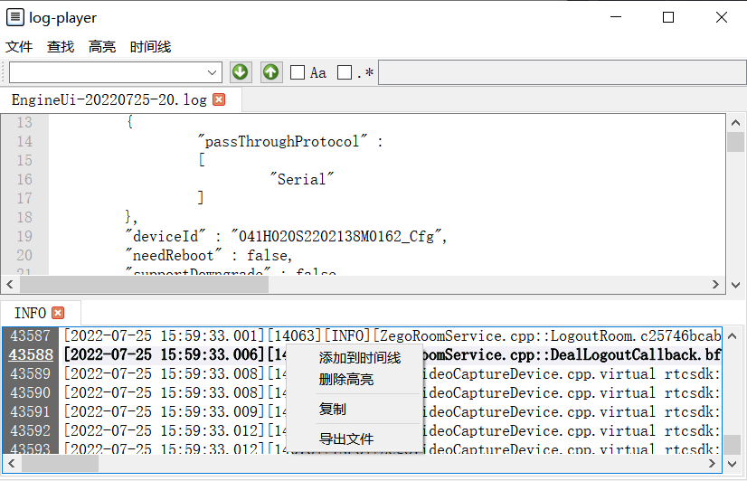
- 支持快捷键
模块设计与实现
总体设计
- 开发环境 : Qt 5.15
- 结构示意图 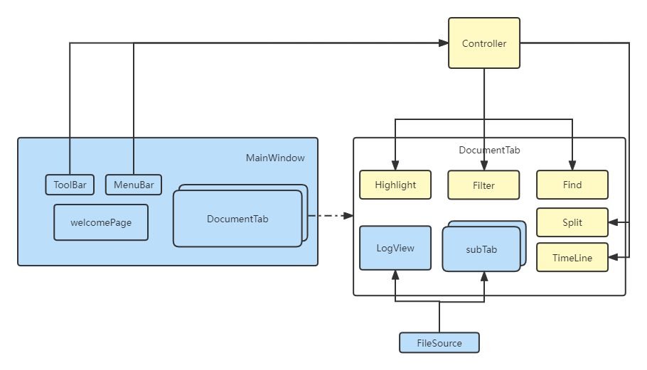
核心:DocumentTab
- 向下读取日志数据
- 主窗口从FileSource获取数据
- 子窗口从sublog获取数据
- 向上接受控制信号
- 来自Controller和MainWindow的菜单信号
- 来自内部Post的信号(customEvent处理)
- 向用户提供操作接口
- 查找/高亮/分割/跳转等操作
- 提供操作反馈:执行结果/执行失败原因等
后端
- 主要功能: 打开日志，读取并解析日志内容，输出给界面 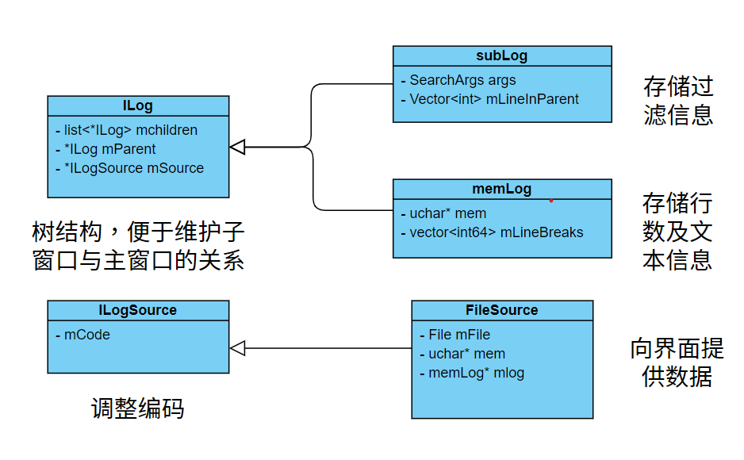
界面通过FileSource提供的getLog()方法获取文本值
之所以抽象出ILogSource,是为了后续支持从stdin(或其他源)处获取日志
后端 (cont'd)
- 文件读取方式: open+read 代替 open+mmap
mmap通过直接将文件映射到进程的地址空间上,与read相比减少了一次Memcpy操作. 只读不需要考虑一致性.
控制模块
- Controller.h
控制模块 (cont'd)
- 将与文件(标签页)相关的QAction统一管理
控制模块 (cont'd)
- 对于每个文档搜索框与高亮标签也是独立的
高亮子模块
- 通过继承QSyntaxHighlighter实现自定义高亮
- 一个标签页(文件)中的高亮可分为两类
- 搜索高亮 : 最多存在一个实例 + 颜色不可变 + 支持大小写/正则 + 变化时无需同步
高亮子模块(cont'd)
- 重写 highlightBlock
当高亮发生改变时,通过rehighlight()对高亮进行更改
查询子模块
查询词的搜索与高亮是彼此分离的
过滤子模块
- 过滤 = 创建子log (树结构) + 向子log填充 (map/reduce)
过滤子模块(cont'd)
- 为子log创建页面
新建的sub Tab在逻辑地位上等同于主页面
时间线子模块
- 时间线通过QGraphics实现,主体为TimeLine + List <TimeNode >
- TimeNode = TimeHead + TimeBody
- TimeHead用来显示节点位置及时间信息
- TimeBody用来显示TimeNode的日志内容 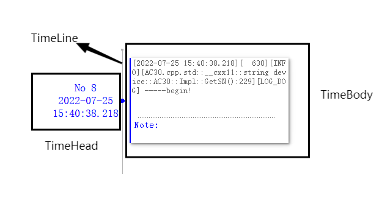
- TimeTrace = List<string> + List<timeline>
时间线子模块(cont'd)
- 快捷跳转
- 重写TimeNode双击与TimeLine键盘事件
- 从根节点开始先序遍历,对每个log都进行跳转
其他子模块
- 工具栏
- 搜索框
- Tag框
- 文件分割
QComboBox + btn * 2
QListWidget: 高亮词-色彩 对
工具栏只实例化一个,根据不同的Tab装载数据
从起始行开始遍历LogSource的数据,逐行写入
实习总结
实习总结
- 基本完成了既定的实习任务
- 在既定实习任务的基础上,加入了自己的想法
- 受限于能力和精力,一些功能尚未完善
实习感想
- Qt
- 从零开始,在实践中学习熟悉了Qt框架
- 完整的经历了一次GUI程序的实现,不再惧怕界面开发
- 实践
- mmap,map/reduce等不再是PPT上考点,而是实际的代码
- 在实践中不断接触学习新的东西
同时,也很感谢公司提供这次实习机会
Thanks For Watching!
And Q&A